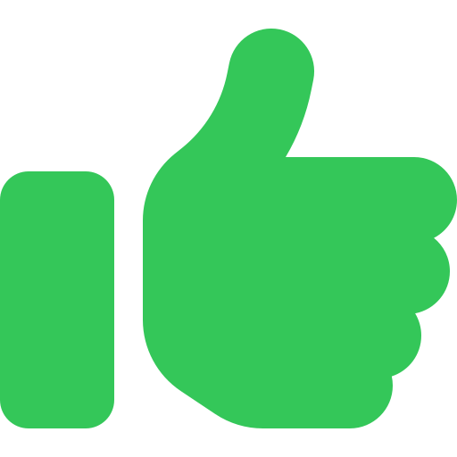
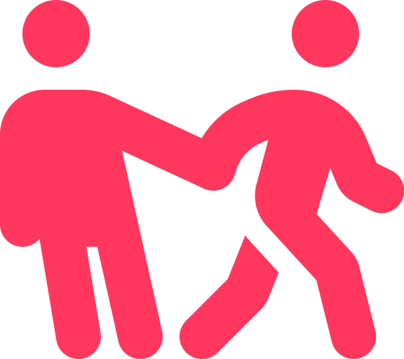
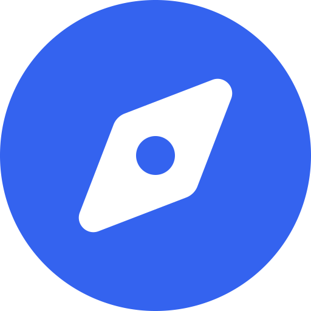

SCHOOL
TOPST Science Core Heuristics for Open Science Outcomes in Learning
Science Core Heuristics for Open Science Outcomes in Learning (SCHOOL), is an integral part of NASA's Transform to Open Science (TOPS) Training initiative. Our mission is to cultivate a vibrant, inclusive culture of open science that welcomes everyone—students, researchers, and curious minds alike—to engage, learn, and contribute to the world of scientific discovery.
The SCHOOL curriculum is a thoughtfully designed program that offers five immersive, 2.5-hour learning modules. These sessions are more than just lessons—they are interactive, interdisciplinary journeys through some of the most critical themes of our time. Whether it’s exploring the intricacies of water systems, health and air quality, environmental justice, natural disasters, climate change, agriculture, or the challenges posed by wildfires, our curriculum weaves together these diverse topics with a common thread, the importance of Open Science.

Open Science, Open Minds
In each module, you’ll find a rich blend of lessons that are not only informative but also transformative. We dive deep into Earth Science Applications, offering real-world use cases that show you how to access and analyze vast data sources. These lessons are rooted in the principles of FAIR data management—ensuring that the scientific data you work with is Findable, Accessible, Interoperable, and Reusable. By learning to navigate these open data science lifecycle workflows, you’re not just gaining knowledge; you’re acquiring the tools to make meaningful contributions to the global scientific community.
Tip
The SCHOOL program covers a wide range of topics. Don’t feel overwhelmed if you’re new to some of them. Take your time with each module, and remember that learning is a continuous process. There are plenty of resources and a supportive community to help you along the way.
Inclusive Learning and Engaging
At the heart of SCHOOL is a commitment to inclusive teaching. We believe that diversity enriches the learning experience, and our curriculum reflects this belief. By incorporating a variety of examples that transcend gender, cultural, and socioeconomic barriers, we ensure that every student feels represented and valued. Our content is delivered in multiple modes—visual, textual, and interactive—so that everyone, regardless of their background or prior experience, can engage fully and comfortably.
Active learning is another cornerstone of our approach. We encourage you to go beyond passive listening. Whether you’re reading, discussing, executing code, or writing, we want you to think critically about what you’re doing. In our asynchronous learning environments, you won’t just be watching a video; you’ll be asked to engage—look at an image, interact with your surroundings, or draw on your past experiences. This hands-on, minds-on approach ensures that learning is both dynamic and deeply personal.
Clear Pathways to Success
To support our inclusive and active learning strategies, we emphasize the importance of clear, transparent evaluations. We believe that everyone should know exactly what is expected of them and how they will be assessed. That’s why we provide clear learning objectives, timely assessments, and examples of what success looks like. By offering feedback early and often, we ensure that you’re never left guessing about your progress. Instead, you’ll have a clear roadmap to follow, with plenty of opportunities to improve and succeed along the way.
Join the Open Science Community
We believe that open science thrives on collaboration and community. By joining our network, you’ll gain access to a wealth of resources, from the latest research and data sets to exclusive invitations to workshops and webinars. Whether you’re a seasoned researcher or just starting your journey, there’s a place for you here.
{kind=link}
Get Started
This page will guide you through the essentials of Open Science, offering resources and insights to enhance transparency and collaboration in research. Prepare to join a global movement dedicated to advancing accessible and impactful scientific research.